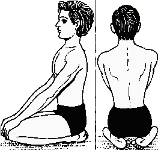

आसन > वज्रासन :

-
वज्रासन, जिसे "डायमंड पोज़" भी कहा जाता है, पाचन को सुधारने और ध्यान के लिए उत्कृष्ट आसन है।
वज्रासन करने की विधि :
- आरंभिक स्थिति: दोनों पैरों को आगे की ओर फैलाकर समतल जगह पर बैठें।
- घुटनों को मोड़ना: घुटनों को मोड़कर पैरों को पीछे की ओर ले जाएं और नितंबों को एड़ियों के
ऊपर रखें।
- हाथों की स्थिति: दोनों हाथों को घुटनों पर रखें, हथेलियों को नीचे की ओर रखें।
- सीधा बैठना: रीढ़ को सीधा रखें और सामान्य रूप से सांस लें। इस स्थिति में कुछ समय तक रहें।
लाभ :
- वज्रासन पाचन में सुधार करता है और पेट की समस्याओं को कम करने में मदद करता है।
- यह ध्यान केंद्रित करने और मन को शांत करने में सहायक होता है।
Move to top